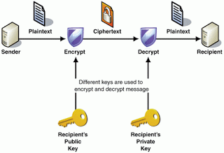

Managing Information Security in Organizations :
Chapter 5
CRYPTOGRAPHY
Cryptography is the science of hiding information in plain sight, in order to conceal it from unauthorized parties. And is a method of storing and transmitting data in a particular form so that only those for whom it is intended can read and process it. The term is most often associated with scrambling plaintext (ordinary text, sometimes referred to as cleartext) into ciphertext (a process called encryption), then back again (known as decryption).
- 
- The methods of encryption are substitution, transposition, monoalphabetic, polyalphabetic, running-key, and one time pads.
- Block ciphers are used to encrypt messages and files.
- Stream ciphers are used to encrypt continuous streams of data such as video or audio.
- Two types of keys are symmetric and asymmetric (or public key).
- Cryptanalysis is an attack on a cryptosystem.
- Key management encompasses several procedures and safeguards used to create, manage, protect, use, and (eventually) destroy encryption keys.
- Hashing is uses a cryptographic algorithm to create a message digest of a file or message, to verify integrity.
- Non-repudiation is the concept of ensuring that a person cannot later deny having performed some action.
- A public-key infrastructure (PKI) is a network-based service used to store digital certificates or public encryption keys of individuals in a community.
- Steganography is used to hide information within some other media, such as an image, audio file, video stream, or slack space in a file.
- Watermarking is a visible form of steganography that is used to ?label? a document, image, or data.